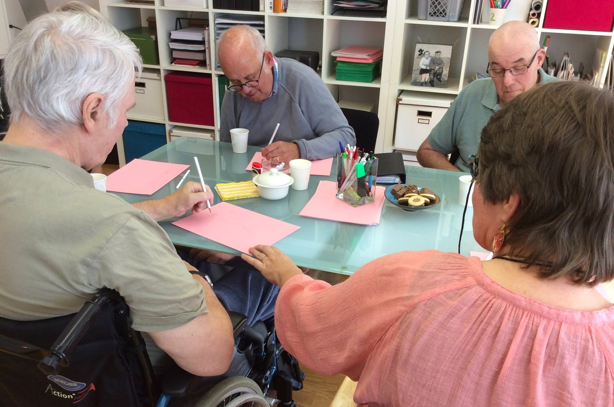
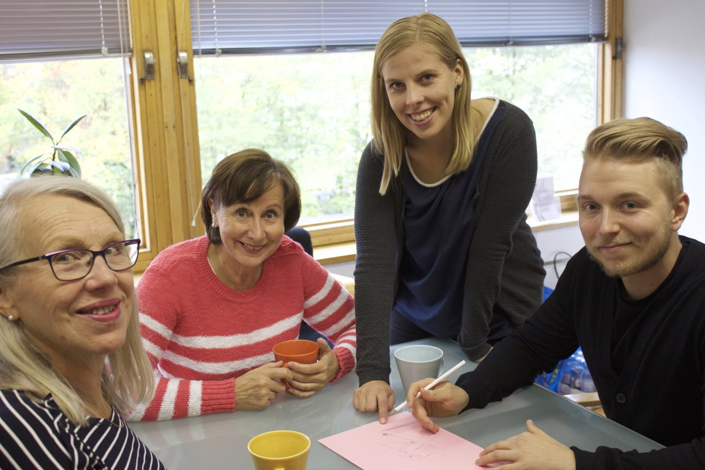

Ryhmämuotoinen kuntoutus

Ryhmämuotoinen puheterapia on tavoitelähtöistä kuntoutusta, joka toteutetaan pienryhmässä. Ryhmässä harjoitellaan keskustelutaitoja sekä uusien toimintamallien hyödyntämistä vaihtuvissa sosiaalisissa tilanteissa.
Ryhmämuotoiseen kuntoutukseen voi osallistua, vaikka yksilömuotoinen puheterapia ei toteutuisi Puheklinikalla. Uusien kuntoutujien on mahdollista tulla tutustumaan ryhmän toimintaan erikseen sovitusti.
Puheklinikalla kokoontuvien ryhmien kuvaukset löytyvät alta. Kaikki ryhmät kokoontuvat Puheklinikan Turun toimipisteen tiloissa. Ryhmät toteutetaan suomen kielellä, ja vetäjänä toimii aina laillistettu puheterapeutti.
Ryhmämuotoinen kuntoutus henkilöille, joilla on afasia
Puheklinikalla kokoontuu säännöllisesti kaksi afasian kuntoutusryhmää: Piirtäjät ja Puhujat.
Ryhmät kokoontuvat 20 kertaa vuodessa, 90 minuuttia kerrallaan. Käynneistä puolet toteutetaan kevätkaudella ja puolet syyskaudella. Uudet kuntoutujat voivat liittyä mukaan kumman tahansa kauden alussa.
Piirtäjät, kommunikoinnin aktivointia ryhmässä
Syksyn 2026 ryhmää kootaan parhaillaan.
Tervetuloa mukaan!
Aktiivista osallistumista ja vuorovaikutusta edistävä ryhmämuotoinen kuntoutus on suunnattu henkilöille, joilla on vaikea-asteinen afasia. Tyypillisesti puheilmaisu on rajallista tai puuttuu kokonaan, ja tueksi tarvitaan vaihtoehtoisia kommunikointikeinoja. Kun puheilmaisu on rajallista, vuorovaikutuksen edellyttämien laajempien kognitiivisten taitojen merkitys korostuu. Tällaisia taitoja ovat muun muassa havainnointi, kontaktiin suuntautuminen, joustavuus, päättelykyky, vuorottelu ja muistitoiminnot.
Vaikea-asteisesti afaattisten henkilöiden puheterapiaryhmässä harjoitellaan vastavuoroisuutta ja aktiivista osallistumista olemassa olevilla taidoilla. Ryhmässä kokeillaan ja harjoitellaan vaihtoehtoisten kommunikointikeinojen ja -menetelmien hyödyntämistä keskustelutilanteissa. Ryhmämuotoinen kuntoutus mahdollistaa myös vertaistuen hyödyntämisen osana kuntoutumisprosessia.
Puhujat, puheilmaisua ja keskustelutaitoja edistävä ryhmä
Syksyn ensimmäinen tapaaminen toteutuu 16.9.2026 klo 10:30-12.00.
Ryhmässä on tilaa uusille kuntoutujille.
Tervetuloa mukaan!
Puheilmaisua ja keskustelutaitoja edistävä ryhmäkuntoutus on suunnattu puhekommunikointiin kykeneville henkilöille, joilla on lievä tai keskivaikea afasia. Tyypillisesti asioiden ilmaiseminen puheen avulla onnistuu, mutta haasteita ilmenee puheen sujuvuudessa, sanan löytämisessä, kertovassa ilmaisussa sekä puherohkeudessa.
Ryhmän tavoitteet kohdistuvat keskustelun, kerronnan ja sosiaalisen osallistumisen tasoille. Ryhmässä aktivoidaan kuntoutujien osallistumista ja tuetaan puheilmaisuun rohkaistumista monipuolisissa ja vaihtelevissa vuorovaikutustilanteissa. Kuntoutujat pääsevät vastaamaan yksilöllisesti asetettuihin haasteisiin turvallisessa ja tuetussa ympäristössä. Myös vertaistuella on ryhmän toiminnassa merkittävä rooli.
Jatkokurssi SpeakOut!® kuntoutuksessa käyneille henkilöille
Seuraava tapaaminen on 3.12.2026 klo 11-12.
SpeakOut!®-jaksolla saavutetun toimintatason ylläpitäminen edellyttää päivittäistä harjoittelua. Itsenäinen, pitkäkestoinen kotiharjoittelu vaatii sinnikkyyttä ja oma-aloitteisuutta. Ryhmämuotoinen jatkokurssi on suunniteltu tukemaan ja motivoimaan kuntoutujaa itsenäisen harjoittelun toteuttamisessa.
Ryhmä kokoontuu neljä kertaa vuodessa: kaksi kertaa kevätkaudella ja kaksi kertaa syyskaudella. Yhden kokoontumisen kesto on 60 minuuttia. Osallistumisen tiheys määräytyy yksilöllisen tuen tarpeen mukaan — mukaan voi tulla neljä kertaa vuodessa tai harvemmin.
Ryhmään voi osallistua suoraan SpeakOut!®-yksilöterapiajakson jälkeen tai milloin tahansa, kun kertaus tai omatoimisen harjoittelun aktivointi on tarpeen. Kuntoutuja voi osallistua Puheklinikan järjestämään ryhmään, vaikka yksilömuotoinen terapiajakso olisi toteutunut muualla.
Ilmoittaudu sähköpostitse tästä. Tervetuloa mukaan!
Ryhmään voi tulla myös itsemaksavana (50€).
Puheterapiaryhmä Parkinsonin tautia sairastaville kuntoutujille
Vuoden 2026 ryhmää kootaan parhaillaan.
Kysy lisää!
Ryhmä on suunnattu kuntoutujille, joiden neurologinen taustasairaus on luonteeltaan etenevä ja joiden oirekuvaan liittyy puheen ja äänenkäytön haasteita. Kuntoutuksen tavoitteena on parantaa puheen kuuluvuutta ja selkeyttä sekä lisätä ymmärrystä taustasairauden vaikutuksesta kommunikointiin. Kuntoutujat omaksuvat ryhmäjakson aikana keinoja, joilla puheen ja äänentuoton ylläpitoa voi tukea omatoimisesti.
Ryhmässä painottuu puhekommunikoinnin selkeyden tukeminen. Lisäksi käsitellään syömiseen liittyviä haasteita sekä Parkinsonin tautiin liittyviä kognitiivisia oireita. Vertaistuella on toiminnassa merkittävä rooli, ja osallistujia kannustetaan jakamaan kokemuksia sekä hyväksi havaittuja arjen tukikeinoja.
Ryhmä kokoontuu vuosittain 12 kertaa, 60 minuuttia kerrallaan. Yhteisten tapaamisten lisäksi ryhmään sisältyy yksilöllinen alku- ja lopputapaaminen (2 × 45 min), joiden puitteissa kartoitetaan henkilökohtaiset tavoitteet ja laaditaan suunnitelma kotiharjoittelun tueksi ryhmän päätyttyä.
Ryhmämuotoinen kuntoutus henkilöille, joilla on dysartria
Vuoden 2026 ryhmää kootaan parhaillaan.
Kysy lisää!
Puheen selkeyttä ja arkikommunikointikyvyn kohentumista edistävä ryhmämuotoinen kuntoutus on suunnattu neurologisille kuntoutujille, joilla on kohtalainen tai vaikea-asteinen dysartria. Ryhmään soveltuvat kaikki kuntoutujat, joille dysartriaoireet aiheuttavat kommunikaatiohaittaa. Mukaan voi tulla myös, kun käytössä on vaihtoehtoisia kommunikaatiomenetelmiä.
Dysartriaryhmässä harjoitellaan selkeää puheilmaisua monipuolisesti vastavuoroisissa kommunikointitilanteissa, kehitetään oman puheilmaisun monitorointitaitoja sekä tuetaan aktiivista sosiaalista osallistumista. Myös vertaistuella on ryhmän toiminnassa merkittävä rooli.
Dysartriaryhmä kokoontuu Puheklinikalla 10 kertaa vuodessa, 90 minuuttia kerrallaan, pääsääntöisesti kevätkaudella.
Tavoitelähtöiset kuntoutusryhmät
Ryhmä muodostetaan tarpeen mukaan ja osallistujiin ollaan yksilöllisesti yhdessä.
Käynnissä olevista ryhmistä voi tiedustella suoraan terapeuteiltamme.
Tavoitelähtöiset ryhmät muodostetaan vastaamaan ryhmäläisten yksilöllisiä kuntoutustarpeita. Ryhmän kokoamisperusteena voi yhteisen kuntoutustarpeen lisäksi olla ryhmäläisten elämäntilanteeseen liittyvä yhteinen tavoite, kuten esimerkiksi työhönpaluu.
Esimerkkejä tavoitelähtöisistä kuntoutusryhmistä:
Kielellis-kognitiiviset haasteet työhönpalaamisen yhteydessä
Etenevät afasiat ja arjen haasteet
Muistisairauksiin liittyvät kommunikoinnin ja vuorovaikutuksen haasteet
Lukemis- ja kirjoittamistaitojen kohentaminen
Puheen sujuvuuden haasteet (änkytys, sokellus)
Nuorten ja nuorten aikuisten vuorovaikutustaitojen harjaantuminen
Osassa ryhmistä kuntoutujat osallistuvat toimintaan itsenäisesti, ja osassa toimintaan osallistuu sekä kuntoutuja että läheinen. Vertaistuki on merkittävä osa ryhmien toimintaa.
Ryhmät kokoontuvat tarpeen mukaan, tyypillisesti 5 tai 10 kertaa vuodessa (90 min / käynti).
